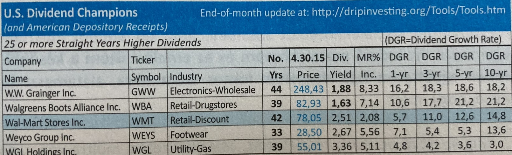

Osztalékfizető részvények kiválasztásának szempontjai:
Osztalék emelés minimum 5 éve megszakátás nélkül, ennél is régebb óta tartó osztalékfizetés
Nincs osztalékcsökkentés
Az osztalékemelés üteme (DGR) ne mutasson trendszerű romlást:
Az induló osztalékhozam legalább az S&P 500 átlagos osztalékhozamának másfélszerese, és semmiképpen nem nagyobb, mint az ötszöröse:
Az induló osztalékhozam és a racionálisan várható éves osztalékemelés ütemének összege legalább 9% legyen
A kifizetett osztalék free-cash-flow-hoz viszonyított aránya 75% alatti, miközben nem mutat meredek, trend-szerű emelkedést ez az arányszám az előző évek értékét vizsgálva
Vásárlás időzítése: a kiválaszott részvény vásárláskori osztalékhozama 3-5 éves távra visszatekintve mindenképpen átlagon felüli, ideális esetben a múltbeli adatokat nézve a maximumhoz közeli